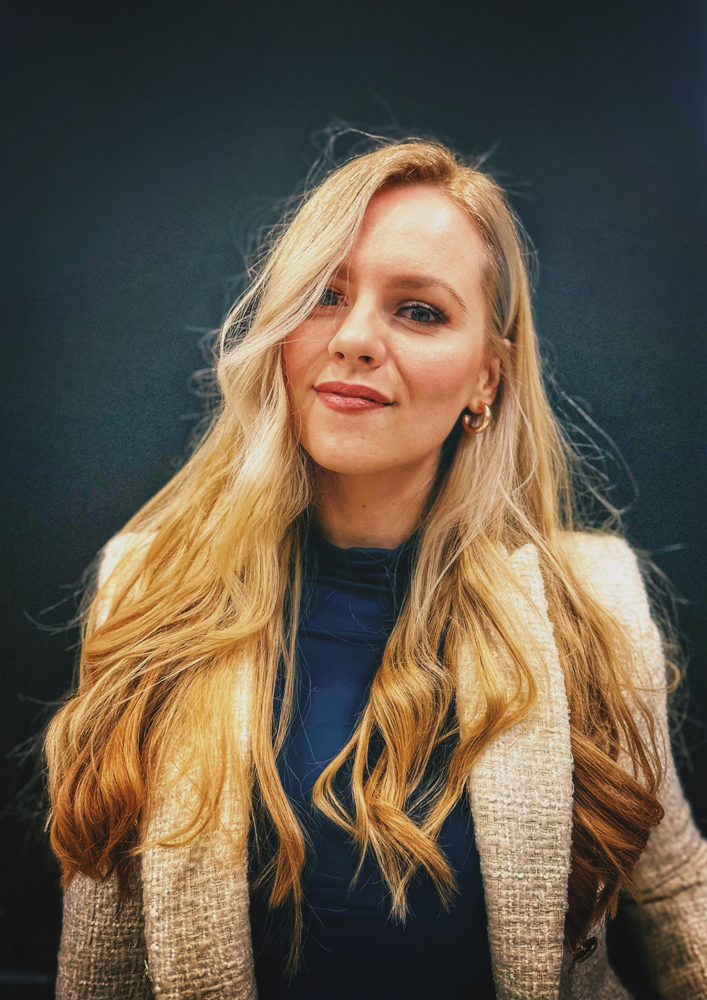

Motivisana sam da unapredim svoje veštine u razvoju frontend aplikacija, sa fokusom na ulogu UX dizajna u celokupnom procesu. Spremna sam da kroz svoj rad, kreativnost i posvećenost stalno napredujem i aktivno doprinosim timu
Rad na realnim projektima, analiza koda drugih developera radi pronalaženja i ispravljanja grešaka
Saradnja sa timom uz korišćenje Jira za organizaciju zadataka
Razvoj i optimizacija aplikacije koristeći Angular i TypeScript.
Rad na UX studiji slučaja, dizajn aplikacije koja poboljšava praćenje napretka i motivaciju studenata
Sprovođenje anketnog istraživanja i analiza korisničkih potreba Razvijen UI dizajn u alatu Figma
Izrada idejnih vizuelnih rešenja za sve vrste web i štampanih materijala
Saradnja sa timovima iz drugih sektora radi definisanja potrebnog grafičkog dizajna.
Korišćenje React za izradu dinamičnog korisničkog interfejsa, uz Laravel za backend logiku i upravljanje podacima.
Informacioni sistemi i tehnologije oktobar 2019 - trenutno
Prirodno-matematički smer septembar 2014 - jun 2018